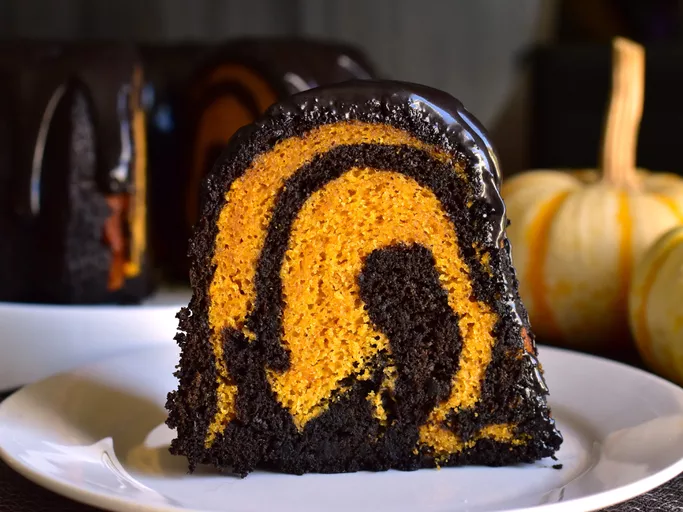

Pumpkin-Black Cocoa Swirl Cake

Description
This strikingly delicious pumpkin-black cocoa swirl Bundt cake packs a flavor punch thanks to black cocoa. Not only does it make for a wonderfully dark color, but it also adds a flavor reminiscent of Oreo cookies!
Ingredients
Pumpkin Batter:
- cooking spray with flour, such as Baker's Joy
- 3 cups of all-purpose flour
- 2 1/2 teaspoons of pumpkin pie spice
- 2 teaspoons of baking powder
- 1 teaspoon baking soda
- 1 teaspon of salt
- 1/2 cup of unsalted butter, softened
- 1/4 cup of vegetable oil
- 2 cups of white sugar
- 4 large eggs, at room temperature
- 1 15 oz can of pumpkin puree (not pumpkin pie filling)
- 2 teaspons of vanilla extract
- 1 cup of sour cream, at room temperature
Black Cocoa Batter:
- 3 tablepsoons of black cocoa powder
- 3 tablespoons of unsweetened Dutch processed cocoa powder
- 2 tablespoons of white sugar
- 1/4 cup of milk
- 1 1 oz square of semi-sweet baking chocolate, melted and cooled slightly
- OPTIONAL - 1 teaspon of espresso powder
Black Cocoa Icing:
- 1 cup of confectioner's sugar
- 2 tablespoons of black cocoa powder
- 1 teaspoon of vanilla extract
- 1 pinch of salt
- 6 tablespoons of heavy cream, or as needed
Steps
- Preheat the oven to 350 degrees F. Spray a 12-cup Bundt pan with a baking spray containing flour, such as Baker's Joy
- In a large bowl, sift together flour, pumpkin pie spice, baking powder, baking soda, and salt.
- In another large bowl, beat butter, oil, and 2 cupers white sugar on medium-high speed with an electric mixer until creamy, about 3 minutes. Add in eggs, 1 at a time, beating well after each addition. After adding in the last egg, beat mixture on medium-high speed until doubled in volume, about 5 minutes. Add in pumpkin and vanilla, and mix until incorporated. Reduce mixer speed to low; pour in half of dry ingredients, and mix until just combined. Add in sour cream; mix until just combined. Add in remaining dry ingredients and mix until just combined.
- Measure out 3 cups batter into another bowl. To this 3 cups batter, add 3 tablespoon black cocoa powder, unsweetened cocoa powder, 2 tablespoons of sugar, milk, espresso powder (if desired), and melted semi-sweet chocolate. Mix on low speed until combined.
- Place 1/3 of black cocoa batter into an even layer in the bottom of the prepared Bundt pan. Pour 1/2 of plain pumpkin batter over the black cocoa layer. Add another 1/3 of black cocoa batter over the top of the plain pumpkin batter. Layer the remaining 1/2 of plain pumpkin batter over that. Finish with the remianing 1/3 of the black cocoa batter.
- Bake cake in the preheated oven until a bamboo skewer inserted into the center of the cake comes out mostly clean, 60 to 65 minutes. Allow cake to cool in pan 25 to 30 minutes before inverting on a wire rack to cool completely.
- To make icing, place powdered sugar, 2 tablespoons black cocoa, 1 teaspoon vanilla extract, pinch of salt, and heavy cream into a bowl. Whisk until smooth. Drizzle icing over cooled cake.
Return to recipe list